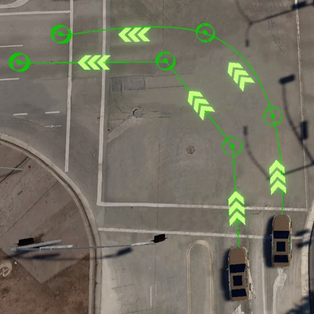

VSE Editors #
Visual Scenario Editor provides multiple different editors that allow editing all the Simulator agents (Egos, NPCs, Pedestrians), controllable with all the parameters. VSE provides a system to create and add custom editors either on the map and for extending the Edit Panel of the VSE Inspector. Refer to Custom Parameter Edit Panels to know more about extending the VSE. Usage of some built-in editors is described below.
Editing Waypoints Path top#

NPC agents with selected NPCWaypointBehaviour, and all the pedestrians use waypoints' paths to describe how agents will move in a simulation. The destination point playback path uses the same waypoints path to set up the egos' movement in the playback mode. Users can set as many waypoints in the path as required, and parametrize each of them. Start editing the waypoints path with the Add Waypoints button, it will add a waypoint to the end of the existing path. Use the right mouse button to cancel adding waypoints, and the left mouse button to add a waypoint in the current position. Multiple waypoints can be added this way until the operation is canceled. An agent is rotated towards the first waypoint. Created waypoints can be edited like other scenario elements, when selected they can be removed, moved or the user can edit their parameters. After selecting a waypoint and clicking Add next, more waypoints can be added right after the selected one. VSE can change the loop parameter, an agent will continue moving from the beginning when the last waypoint is reached when the loop is selected.

Waypoints support either a linear movement with a constant speed and a uniformly accelerated movement. An agent will constantly move with the set speed when the acceleration parameter is set to 0. If acceleration is greater than zero, the speed parameter determines the maximum speed that the agent can reach when acceleration. If the current speed is greater than the set speed, acceleration becomes the deceleration parameter and the agent tries to slow down to the determined speed. If the acceleration value is not big enough, the set speed may not be reached during the movement. The animation above compares movement without acceleration on the left and with acceleration set on the right.

VSE supports two different waypoints path: Linear and BezierSpline. An agent with a selected Linear path will drive straight from waypoint to waypoint, when the BezpierSpline path type is selected, Simulator uses the Bezier Spline algorithm to make the movement smooth. The animation above presents paths with the same waypoints, but different path types. The vehicle on the left uses the Linear path and the vehicle on the right uses the BezierSpline path.
Editing Destination Point top#

While editing an ego agent a destination point can be activated for this agent. Toggle the destination point value in the edit panel while editing an ego agent to activate or deactivate the destination point. The camera will focus on the destination point after pressing the camera button.

Destination point allows adding waypoints' path for testing the created scenario in the playback mode. Show Playback Path views the path and allows editing it. Add Playback Waypoint adds another waypoint and the dropdown allows changing the path type. An ego vehicle will follow the path in the playback mode as other agents with waypoints behaviour do.
Destination point's playback path will not affect the final simulation, it is used only in the VSE playback mode.
Editing Behaviour top#

NPCs supports various behaviour scripts that will control the vehicle. VSE provides a dropdown with all available NPC behaviours, selected behaviour is saved in the scenario. Some behaviours can be parameterized, for example, NPCLaneFollowBehaviour got the isLaneChange toggle parameter and the maxSpeed value. Only NPCs with the NPCWaypointBehaviour supports editing the waypoints.
Editing Color top#


VSE includes the color picker panel that allows selecting any color from the RGB and HSV pallet. NPCs support selecting a custom color of the vehicle. To change the vehicle color click the current color button and select the new color in the opened color picker. The changed color will be applied immediately, but the undo record is registered after closing the color picker panel.
Editing Triggers top#

Editing a waypoint allows adding different trigger effectors to this point. All the effectors added to one waypoint are executed in parallel. Some effectors require additional settings and parameters. Each effector can use a custom edit panel.
Triggers can be copy and pasted. Use the copy icon (button on the left of the Trigger title) to copy the effectors, then use the paste icon (button on the right of the Trigger title) to clone the effectors to another waypoint.

To add a new trigger effector, select it from the dropdown list and click the add button on the right side. A new effector will be added and available for addition under the dropdown.
The simulator provides the following trigger effectors with the VSE:
- Time To Collision
This effector calculates if an NPC can cause a collision with any ego, calculating current direction, velocity, and acceleration. The NPC will wait to proceed to the next waypoint such that a collision with the ego vehicle would occur. If no possible collision is found NPC does not wait.
- Wait For Distance
Adding this effector makes NPC wait at the waypoint until any ego vehicle is closer than the max distance (in meters) set in this trigger effector. If no ego vehicle will get close enough, the NPC can wait infinitely.
- Wait Time
The agent will wait for the fixed time (in seconds) at the waypoint before continuing movement towards the next waypoint.
- Waiting Point

A waiting point makes the agent wait until any ego vehicle enters the activation zone. Activation zone can be moved like other scenario elements, by dragging the Move button. If it is required, the radius (in meters) of the activation zone can be changed in the Edit panel of the waypoint or by dragging the Resize button to the left (shrinking) or right (enlarging).
- Control Trigger

This trigger effector will apply the edited policy to all marked controllables when the trigger is invoked. Click the Mark Controllables button and then click on the controllables on the map to mark them with this effector, right-click to cancel the marking process. Only one type of controllable can be marked by a Control Trigger, but multiple Control Triggers are allowed. See the Editing Controllables section to learn more about editing policies.

Editing Controllables#

After selecting controllables in the VSE, the editing panel allows changing their default policy. A policy is a list of control actions that will be applied when the controllable is initialized, each policy entry represents a single control action. VSE fills the action dropdown with all the allowed actions for the edited controllable. The value can be edited either by an input field, the decimal input field for wait and trigger actions, dropdown for state actions, and no value edition for the loop action. Each policy entry can be removed with the button on the right of the policy row.
A whole policy can be copied and pasted between controllables of the same type. The copy button (on the left from the Add Policy Entry button) copies the policy to the clipboard so it can be pasted to another controllable of the same type (button on the right from the Add Policy Entry button).
Custom Parameter Edit Panels#
Panels that will be used in the Edit Panel have to extend the ParameterEditPanel class and their prefab have to be linked to the Edit Panel prefab in the Assets (Assets/Prefabs/ScenarioEditor/InspectorContent/EditPanel). In the future VSE will support loading external parameter edit panels from AssetBundles. VSE will instantiate all linked panels prefabs and will call their initialize and deinitialize methods. Panel can be visible after setting its gameobject to active. Most of the parameter edit panels depend on the selected element and become visible only if selected element fullfil their requirements. For example destination point edit panel becomes visible if selected element (ScenarioManager.Instance.SelectedOtherElement) is a ScenarioAgent and has an AgentDestinationPoint extension.
VSE Extensions page describes more options for extending the visual scenario editor.